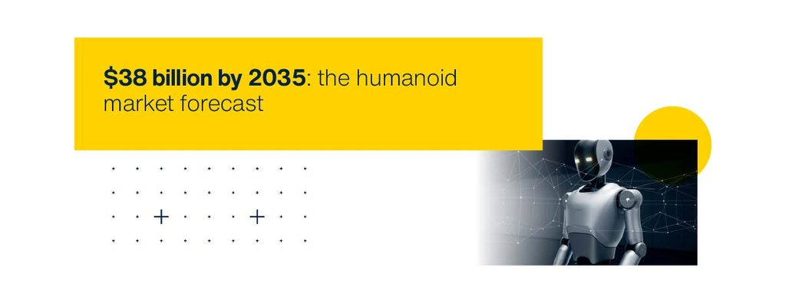

Robôs humanoides: a inteligência começa nos sensores
Os humanoides estão saindo dos laboratórios e entrando nas fábricas. Segundo a STMicroelectronics, o que vai decidir essa corrida está "abaixo do cérebro": sensores, controle de motores e energia.

O que é IA física
A chamada IA física é a inteligência artificial embarcada em máquinas que percebem o ambiente, decidem e agem no mundo real. Diferente de um modelo de linguagem rodando num data center, ela tem limites rígidos: precisa reagir em milissegundos e com pouca energia disponível.
O robô humanoide é o caso mais exigente: ele precisa se equilibrar em duas pernas, segurar objetos feitos para mãos humanas e dividir o espaço com pessoas sem colocá-las em risco.
Por que construir robôs com forma humana?
- O mundo já é feito para humanos. Um robô com nossas proporções trabalha em fábricas e armazéns sem que eles precisem ser reformados.
- Falta mão de obra. Só nos Estados Unidos, a indústria pode precisar de 3,8 milhões de trabalhadores até 2033, e cerca de metade dessas vagas pode ficar sem ser preenchida (Deloitte e The Manufacturing Institute).
- Ele troca de tarefa. Um robô industrial comum é comprado para uma única tarefa; um humanoide pode assumir uma função inteira.

Onde eles já estão trabalhando
- O Digit, da Agility Robotics, movimenta caixas em um centro logístico da GXO nos EUA.
- Robôs da Figure passaram por um piloto de dez meses na fábrica da BMW em Spartanburg.
- A Hyundai apresentou na CES 2026 a versão de produção do Atlas, da Boston Dynamics.
- A chinesa Unitree informou ter vendido 5.500 humanoides em 2025.
O que existe dentro de um humanoide
A ST divide o robô em blocos. Os quatro principais são:
| Bloco | Desafio | Componentes envolvidos |
|---|---|---|
| Percepção | Entender o ambiente em 3D, em tempo real | Sensores de imagem, sensores de distância (time-of-flight) e IMUs |
| Equilíbrio | Não cair: o robô nunca está parado de forma estável | Sensores inerciais com aprendizado de máquina dentro do próprio sensor |
| Movimento | Dezenas de articulações, dos ombros aos dedos | Um driver de motor e um controlador para cada articulação |
| Energia | Fazer tudo isso funcionar com bateria | Semicondutores de nitreto de gálio (GaN), menores e mais eficientes |
O equilíbrio é um bom exemplo. O sensor inercial funciona como o "ouvido interno" do robô, e o primeiro nível de reconhecimento de movimento já acontece dentro dele, em microssegundos, antes mesmo de o processador principal entrar em ação.
Segurança vem de fábrica
Para conviver com pessoas, o robô precisa ser confiável, e isso não pode ser adicionado no fim do projeto. A segurança física (safety) e a segurança digital (security) andam juntas: um software invadido transforma uma máquina física em um risco físico.
Onde entram os semicondutores
A ST estima cerca de US$ 600 em semicondutores em cada humanoide, divididos entre sensores, controle, acionamento, comunicação e energia. Um exemplo é a mão robótica desenvolvida com a Ruiyan Intelligent Control: todo o controle cabe numa placa do tamanho da palma, com um microcontrolador coordenando cinco articulações e seis graus de liberdade.
Para quem estuda embarcados, a mensagem é clara: por trás da IA de um humanoide existem microcontroladores, sensores, drivers de motor e fontes de alimentação, os mesmos assuntos que estudamos na bancada.